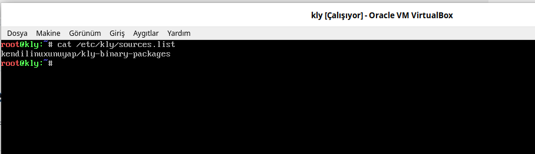
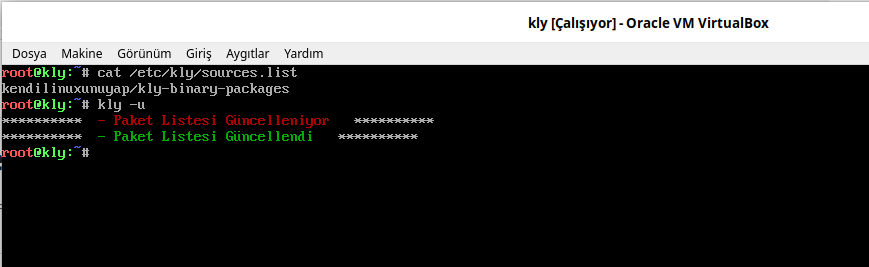
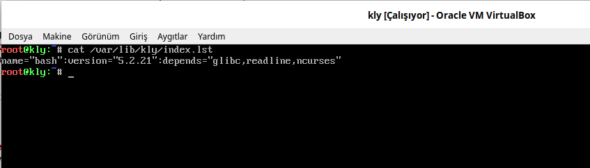

kly ile Paket Listelerini Güncelleme¶
kly Paket Sistemi yerelde .kly paketlerini kly -pi paket.kly şeklinde kurulabilir. Ama bütün paketlerin yerelde olması bu sistemi kullanacak kişi sayısını sınırlandıracak ve birkaç kişiyi geçmeyecektir. Paketleri internet ortamında tutmak sistemi kullanacak kişilerin sayısnı artıracak ve istenilen zaman ve konumda paketlere erişim imkanı sunacaktır.
kly paketleri github üzerinde tutulmaktadır. Bu paketlerin listesini tutan index dosyası github ortamında https://github.com/kendilinuxunuyap/kly-binary-packages/releases/download/current/index.lst adresinde tutulmaktadır. Bu adresi sisteme kaydetmeliyizki güncelleme sırasında bu adreslerden güncel index.lst dosyasını yerele indirebilmeli. Adreslerin listesini tutan dosyamız /etc/kly/sources.list konumunda turulmaktadır. Debianda da benzer(/etc/apt/sources.list) durum bulunmaktadır.
{kind=link}

Yerelde (Temel Sistem) ise /var/lib/kly/index.lst dosyamızda paketlerin listesi tutulur. Mevcut sisteme yeni bir paket yaptık ve github'a yüklediğimizi varsayalım. Bu durumda yerelde (Temel Sistem) ise /var/lib/kly/index.lst konumundaki dosyanında https://github.com/kendilinuxunuyap/kly-binary-packages/releases/download/current/index.lst adresindeki dosyayla aynı olması gerekir. Bu senaryo tüm linux dağıtımlarında aynıdır. Bu sebeplerden dolayı bir paket kurulum öncesi genelde güncelleme işlemi yapılır. Aşağıda güncelleme işleminin yapıldığını göstermektedir.
{kind=link}

Aşağıda /var/lib/kly/index.lst konumundaki dosyanın içeriğini görmekteyiz.
{kind=link}
